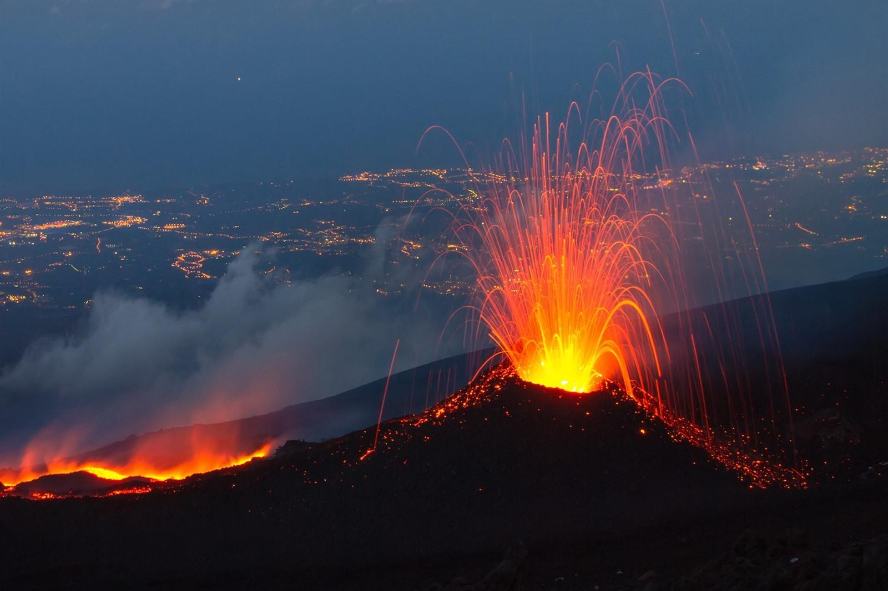
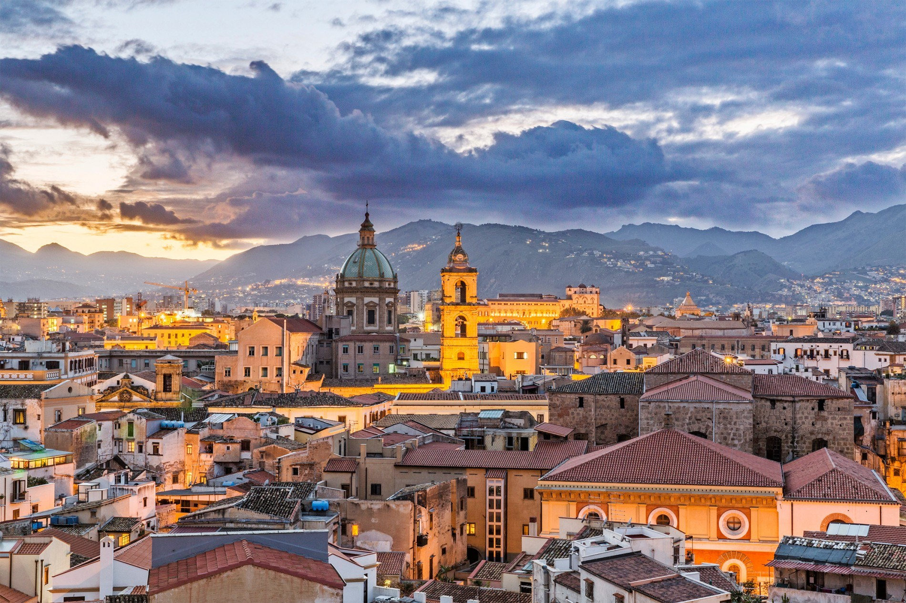
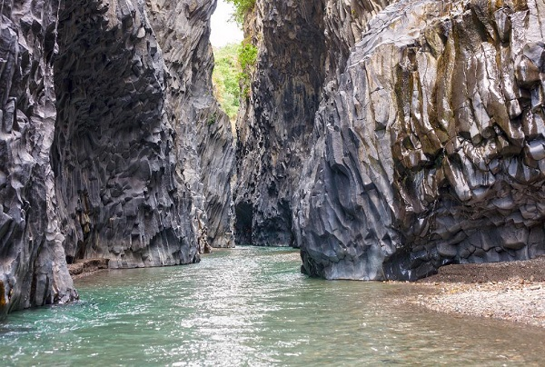

Sicilië staat ook wel bekend als het uiteinde van de laars. Het is een eiland aan de Middellande Zee. De hoofdstad van Sicilië is Palermo. De meeste toeristen komen naar het eiland toe om te genieten van de prachtige natuur, de schitterende stranden en ongelofelijke hoeveelheid oudheid die er op het eiland te vinden is. Het is er het aller leukst in de lente en zomerperiode.
Bezienswaardigheden:
- De Etna
De Etna is een vulkaan en is meer dan 3000 meter hoog en is de hoogste actieve vulkaan van Europa. De bodem is ontzettend vruchtbaar waardoor hij bijzonder goed geschikt is voor land- en wijnbouw. Je kan een bezoekje plegen aan het wijnhuis Vivera, waar je van de lekkerste wijn van Siciliëkan proeven. Ook een rondleiding op de Etna zelf is geweldig leuk, hierbij krijg je de kans om dit indrukwekkende landschap (inclusief lava als je geluk hebt) van dichterbij op een veilige manier te bekijken. Vaak zijn er veel lieveheersbeestjes.
- Palermo
Zoals al eerder is aangegeven is Palermo de hoofdstad van Sicilië. In Palermo zelf zijn er veel bezienswaardigheden zoals, de magnifieke kathedraal, het Palazzo dei Normanni, de catacomben en Teatro Massimo. Daarbij ligt er net buiten de stad het charmante Monreale dat zijn naam van koninklijke berg alle eer aan doet.
- De kloof van Alcantara
Duizenden jaren geleden werd de kloof van Alcantara gevormd door de Etna en als je het rustig aan wil doen kan je gewoon de natuurpracht bewonderen en zelfs zwemmen. Mag het wat ruiger is canyoning erg leuk. Je gaat klimmend en zwemmend een weg door deze ruige wildernis die je op een unieke manier ervaart. Dit is een grote aanader voor actieve/sportieve mensen
